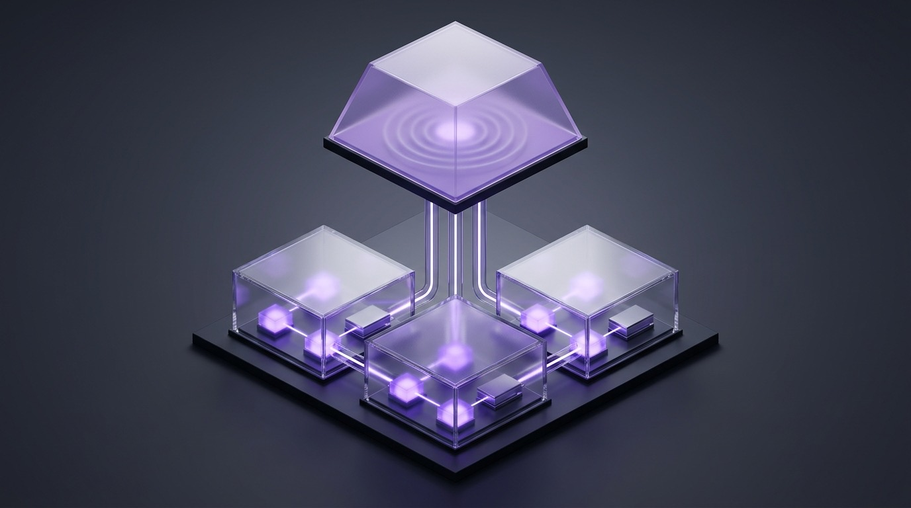

Build crash-safe AI agents and multi-day background pipelines that survive server restarts, zero-downtime deploys, and API rate limits—powered by Workflow 5, eve, Vercel Queues, Vercel Schedules, Sandbox, and Daemons.
eve Framework
use workflow & use step
Vercel Queues
Vercel Schedules
Sandbox & Daemons
"use step", sleep for days with zero idle compute, and replay cleanly past failures.WorkflowAgent inside existing apps or scaffold filesystem-first agents with eve, Slack channels, and @vercel/connect.@vercel/queue topics, schedule per-tenant jobs, and execute untrusted code inside Firecracker sandboxes.Standard HTTP functions vanish after a few minutes, while real AI agents need to wait for human approvals, recover from upstream rate limits, and stream progress across browser reloads. Vercel solves this by layering deterministic replay and durable message logs underneath ordinary TypeScript functions.
agent-runs Inspector Tourp. 4use workflow vs. use stepp. 5WorkflowAgent & eve Agentsp. 6
At the bottom sits Vercel Queues, an append-only topic log with at-least-once delivery. Workflows v5 builds on top of Queues: your "use workflow" orchestrator runs in a deterministic replay VM that journals every event, while "use step" workers execute Node.js I/O, retry transient errors, and persist results. At the top, eve wraps durable sessions, tools, skills, channels, and evals into a filesystem-first agent framework.
evesleep("72h"), the VM replays your orchestrator function using stored step outputs from the event log. Previously completed "use step" calls return their cached values immediately without charging another LLM call or double-charging Stripe.
Vercel offers six complementary durability primitives. Pick the highest-level abstraction that fits your workload instead of hand-rolling queue state machines or polling loops.
| Primitive | Reach For It When… | Key Mechanism | Skip It If… |
|---|---|---|---|
eve FrameworkAgent-First Apps |
Building a dedicated backend AI agent with persistent sessions, Slack/GitHub channels, skills, and evals. | Filesystem-first directory (agent/) + defineAgent + useEveAgent + vercel agent-runs. |
Adding one durable step inside an existing Next.js checkout route. |
Workflow 5WorkflowAgent |
Adding multi-step orchestration, human approvals, or durable AI loops directly inside Next.js, Hono, or Express. | "use workflow" + "use step" + WorkflowAgent (@ai-sdk/workflow 2.x). |
You only need single-hop fire-and-forget job buffering. |
Vercel Queues@vercel/queue |
Buffering traffic spikes, decoupling microservices, or fanning one event out to multiple consumer groups. | Append-only topics, send(), handleCallback(), up to 7-day retention & delays. |
You need multi-step branching, sleep(), or human webhook pauses. |
Vercel Schedules@vercel/schedules |
Running recurring cron jobs or one-time future reminders per tenant/timezone (replaces legacy crons). |
Static private function targets or dynamic Schedules.create() targeting queue topics. |
Work is triggered by user clicks or incoming webhooks rather than time. |
| Vercel Daemons Always-On Workers |
Running continuous poll loops (Vercel Queues poll mode, Celery, BullMQ, Sidekiq) with no inbound HTTP. | Dockerfile declared under daemons in vercel.json; fixed instances per region. |
Push-mode Functions or Queues can handle your request-driven work. |
| Vercel Sandbox Firecracker VMs |
Agents execute untrusted user code, run shell builds, or process media in an isolated Linux filesystem. | @vercel/sandbox v2 named persistent microVMs with L7 network policies & snapshots. |
Your code only calls safe typed APIs and database queries. |
WorkflowAgent Quickstart# Workflow 5 deprecates DurableAgent (@workflow/ai)
npm i workflow@latest ai @ai-sdk/workflow zod
# Next.js setup: wrap next.config.ts with withWorkflow
import { withWorkflow } from "workflow/next";
export default withWorkflow(nextConfig);
# Pull project OIDC credentials for local dev
vercel link && vercel env pullRead version-exact docs inside node_modules/workflow/docs/ and node_modules/ai/docs/ before coding.
eve Filesystem-First Agent Quickstart# Scaffold a new durable agent project
npx eve@latest init support-agent
cd support-agent
# Start local dev runtime & inspect live traces
npx eve dev
vercel agent-runs list --limit 10Every installed eve package bundles its exact guide under node_modules/eve/docs/README.md.
workflow@latest), always import WorkflowAgent from @ai-sdk/workflow (2.x) instead of the deprecated DurableAgent from @workflow/ai. Plain "provider/model" strings (such as "openai/gpt-5.4" or "spacexai/grok-4.6") route automatically through Vercel AI Gateway using OIDC authentication—no manual provider keys required.
agent-runs Inspector
Debugging durable systems requires seeing both replay history and live agent tool spans. Inspect local and production runs with npx workflow web and vercel agent-runs across these seven diagnostic touchpoints.
fetchCustomerProfile
0 ms 1
step_completed • Output hydrated via devaluesyncBillingLedger
1.42 s 2
RetryableError (HTTP 429) → Attempt 2 succeededsleep("48h")
0 compute 3
wait_created → Queue delayed message wakes VM cleanly at T+48hcreateWebhook()
Waiting 4
wh_9a3f... • Resumes on manager POST to resumeWebhookvercel agent-runs TRACEopenai/gpt-5.4 (AI Gateway OIDC)3 / 10 • Tokens: 4,120 in / 680 outgetWritable<ModelCallStreamPart>()ar_78c1... • Channel: slack/#ops-triagelookupOrder, sandbox.runCommandvercel agent-runs inspect ar_78c1 --jsonworld.steps.list({ runId, resolveData: 'none' })
CLI: npx workflow inspect run <id> --backend vercel --url
"use step" calls store serialized outputs in the event log so subsequent replays skip re-execution in 0 ms.
RetryableError instances trigger queue-backed backoff without losing earlier steps.
sleep() Suspension: Writes a wait_created event and releases the worker completely until the scheduled queue message fires.
resumeHook or resumeWebhook.
WorkflowAgent Gateway Span: Tracks AI SDK 7 model turns, token counts, and step-backed tool calls routed cleanly via Vercel AI Gateway.
vercel agent-runs Trace View: Inspects production eve sessions, tool traces, and token spend from the CLI or Vercel MCP server.
--url to npx workflow inspect run <run_id> --backend vercel --url to print a shareable dashboard URL straight to Slack or PR comments without launching a local browser.
"use workflow" vs. "use step"
The secret to error-free Workflow 5 code is knowing where each directive runs. Keep "use workflow" strictly for deterministic orchestration and move all real I/O, npm libraries, and network calls into "use step" functions.
"use workflow" Replay Sandbox RulessetTimeout, setInterval, raw require(), Node fs/crypto, or bare global fetch().sleep("48h"), createHook(), createWebhook(), fetch imported from "workflow", and start() for child runs."use step" Full-Access Workersfetch with zero sandbox restrictions.devalue (or @workflow/serde for classes).start(myWorkflow, [args]) from "workflow/api" with withWorkflow configured.// app/api/onboard/route.ts & workflows/onboard.ts
import { sleep, FatalError, RetryableError } from "workflow";
import { start } from "workflow/api";
async function provisionWorkspace(orgId: string) {
"use step";
console.log("[step] provisioning org", orgId); // Always log step entry for observability
const res = await fetch("https://api.internal/orgs/" + orgId, { method: "POST" });
if (res.status === 429) throw new RetryableError("Rate limited", { retryAfter: "2m" });
if (res.status >= 400) throw new FatalError("Invalid org " + orgId);
return res.json();
}
export async function onboardWorkflow(orgId: string) {
"use workflow";
const workspace = await provisionWorkspace(orgId);
await sleep("24h"); // Suspends cleanly on Vercel Queues with zero compute held
return { status: "ready", workspaceId: workspace.id };
}
// Launch from route: const run = await start(onboardWorkflow, [orgId]);node_modules/workflow/docs/node_modules/workflow/docs/ (covering foundations/, api-reference/, worlds/, and errors/). Also batch or bundle loops over thousands of items so each run stays well below event-log ceilings.

"use workflow" VM coordinates timing, hooks, and child runs deterministically, while lower "use step" worker vaults execute full Node.js I/O and lock state into glowing replay checkpoints.
WorkflowAgent & eve Filesystem-First Agents
Whether you embed an agent inside an existing Next.js route with WorkflowAgent or build a dedicated multi-channel agent service with eve, durable checkpoints guarantee every reasoning turn and tool result survives failures.
1. WorkflowAgent (Replaces DurableAgent)
import { WorkflowAgent, type ModelCallStreamPart,
createModelCallToUIChunkTransform } from "@ai-sdk/workflow";
import { isStepCount, tool } from "ai";
import { getWritable } from "workflow";
async function queryCRM({ id }: { id: string }) {
"use step"; // External I/O MUST use "use step"
return await db.customers.findUnique({ where: { id } });
}
export async function supportWorkflow(prompt: string) {
"use workflow";
const agent = new WorkflowAgent({
model: "openai/gpt-5.4", // Routes via AI Gateway
tools: { queryCRM: tool({ /* inputSchema, execute: queryCRM */ }) },
});
return await agent.stream({
messages: [{ role: "user", content: prompt }],
writable: getWritable<ModelCallStreamPart>(),
stopWhen: isStepCount(10),
});
}2. eve Filesystem-First Agent Layout
support-agent/
├── agent/
│ ├── instructions.md # Core system behavior
│ ├── tools/ # Typed durable tool modules
│ ├── skills/ # On-demand playbooks
│ ├── connections/ # @vercel/connect/eve OAuth
│ ├── channels/ # Slack, GitHub, HTTP adapters
│ ├── subagents/ # Delegated specialist agents
│ └── schedules/ # Recurring agent tasks
└── app/page.tsx # Frontend via useEveAgent()
Connect React UIs with useEveAgent, inspect live production traces via vercel agent-runs, and check node_modules/eve/docs/.
Durable agents stay reliable when you separate identity, step-backed I/O, workflow-level pauses, streaming output, and termination guards:
new WorkflowAgent({ model: "openai/gpt-5.4" }) or defineAgent() in eve using plain Gateway IDs.
Tag database, API, and Sandbox tools with "use step" so every side effect caches and auto-retries.
Keep tools calling sleep() or createHook() WITHOUT "use step" so they run directly in workflow scope.
Pipe getWritable<ModelCallStreamPart>() through createModelCallToUIChunkTransform() (or useEveAgent).
Enforce stopWhen: isStepCount(10) plus FatalError vs. RetryableError to prevent runaway loops.
"use step" on a tool whose execute function calls sleep() or createHook()—workflow primitives only operate at workflow scope. Conversely, every tool touching npm packages, databases, or external APIs must declare "use step". Pipe HTTP responses using run.getReadable().pipeThrough(createModelCallToUIChunkTransform()) so UI clients survive page reloads cleanly.
Real production agents regularly pause for days waiting on human sign-off or execute untrusted AI-generated scripts. Workflows v5 hooks suspend execution at zero cost, while Vercel Sandbox jails untrusted code inside Firecracker microVMs.
createHook() vs. createWebhook()createHook({ token }): Uses deterministic server-side tokens (e.g., "approval-" + invoiceId). Implements AsyncIterable so for await handles multi-turn chat events. Resume via resumeHook(token, payload).createWebhook(): Generates a secure random token and public URL automatically (never pass a custom token). Delivers full HTTP Request objects via resumeWebhook(token, req).@vercel/sandbox v2)Sandbox.getOrCreate({ name }) auto-snapshots on stop and restores the Ubuntu filesystem (Node 24, Python 3.14, Bun) on resume.networkPolicy: "deny-all", a short timeout, and persistent: false when running arbitrary user or LLM code.transform rules inject auth headers on egress so secrets never enter VM memory.Multi-Day Webhook Approval + Timeout
import { createWebhook, sleep } from "workflow";
import { resumeWebhook } from "workflow/api";
export async function payoutApproval(orderId: string) {
"use workflow";
const hook = createWebhook();
await notifyApprover(orderId, hook.url);
const decision = await Promise.race([
hook.then((req) => req.json()),
sleep("72h").then(() => ({ approved: false })),
]);
return decision.approved ? await releaseFunds(orderId) : "expired";
}
// Callback route: await resumeWebhook(token, request);Safe Step-Backed Sandbox Tool
import { Sandbox } from "@vercel/sandbox";
import ms from "ms";
async function runUntrustedPython(code: string) {
"use step";
const sbx = await Sandbox.create({
networkPolicy: "deny-all",
persistent: false,
timeout: ms("2m"),
});
try {
const res = await sbx.runCommand("python3", ["-c", code]);
return { exitCode: res.exitCode, out: await res.stdout() };
} finally {
await sbx.stop();
}
}runCommand() executes directly without a shell—wrap pipes or redirects inside ["bash", "-c", "..."], and always check res.exitCode (non-zero exits do not throw). To let agents inside a Sandbox call AI Gateway without embedding API keys, forward or broker VERCEL_OIDC_TOKEN to https://ai-gateway.vercel.sh. Read full specs inside node_modules/@vercel/sandbox docs.
Use Vercel Queues (@vercel/queue / Python vercel-queue) when you want direct control over topic publishing, buffering, and consumer groups, and Vercel Schedules (@vercel/schedules) to replace legacy crons with timezone-aware recurring or one-shot triggers.
1. Queues: Idempotent Publish & Poison-Pill Guard
// Producer: idempotencyKey drops duplicates
await send("orders", { orderId }, {
idempotencyKey: "order-" + orderId,
delaySeconds: 60, // up to retentionSeconds
retentionSeconds: 604800 // 7 days max (default 24h)
});
// Consumer: app/api/queues/orders/route.ts
export const POST = handleCallback(processOrder, {
retry: (err, meta) => {
if (meta.deliveryCount > 5) return { acknowledge: true };
return { afterSeconds: Math.min(300, 2 ** meta.deliveryCount * 5) };
},
});2. Schedules: Static Private vs. Dynamic Per-User
// vercel.json: queue consumer + private schedule
{
"functions": {
"app/api/queues/orders/route.ts": {
"experimentalTriggers": [{ "type": "queue/v2beta", "topic": "orders" }]
},
"api/nightly.ts": {
"experimentalTriggers": [{ "type": "schedule/v1beta" }]
}
},
"schedules": {
"nightly": { "schedule": "0 2 * * *", "function": "api/nightly" }
}
}
// Dynamic per-tenant: await Schedules.create({
// namespace: "t-" + id, name: "digest", target: { topic: "digests" },
// expression: { type: "cron", cron: "0 9 * * *" }, timezone: tz });PollingQueueClient inside Vercel Daemons. For static schedules, prefer private function targets wrapped in handleSchedule() over legacy path routes—private functions carry no public URL and eliminate manual CRON_SECRET checks.
@vercel/schedules chronometers inject recurring or one-shot events into append-only @vercel/queue logs, delivering independent copies to parallel push Functions and poll-mode Daemon consumer pods.
Adapt these five field-tested patterns directly into your repository. Each pairs the right Vercel durability layer with explicit idempotency, timeout safety, and clean observability.
| Recipe & Pattern | Stack & Primitives | Implementation Blueprint |
|---|---|---|
| 1. Crash-Safe Research Agent Workflow 5 + AI SDK |
start()WorkflowAgent"use step" toolsgetWritable() |
Define searchDocs and fetchMetrics with "use step"; instantiate new WorkflowAgent({ model: "openai/gpt-5.4", tools }) inside "use workflow"; pass getWritable<ModelCallStreamPart>() and return run.getReadable().pipeThrough(createModelCallToUIChunkTransform()) so browser reloads resume seamlessly. |
| 2. Multi-Day Approval Gate Human-in-the-Loop |
createWebhook()sleep("48h")resumeWebhook() |
Generate a one-time callback URL with const hook = createWebhook() inside "use workflow", email or Slack hook.url via a "use step" helper, then race Promise.race([hook, sleep("48h")]). In your callback route handler, forward the incoming HTTP request directly to resumeWebhook(token, request). |
| 3. Idempotent Order Topic Vercel Queues Push |
@vercel/queueidempotencyKeydeliveryCount |
Publish with send("orders", payload, { idempotencyKey: orderId }). Export POST = handleCallback(fn, { retry }) registered under experimentalTriggers: [{ type: "queue/v2beta", topic: "orders" }]. Acknowledge poison messages when metadata.deliveryCount > 5 and guard database writes by metadata.messageId. |
| 4. Per-Tenant TZ Digest Dynamic Schedules |
@vercel/schedulesSchedules.create()executionId |
Call Schedules.create({ namespace: tenantId, name: "digest", target: { topic: "digests" }, expression: { type: "cron", cron: "0 9 * * *" }, timezone: user.tz, payload: { tenantId } }). In the queue consumer, deduplicate by message.executionId so retries never send duplicate emails. |
5. eve Slack Ops Agenteve + Connect + Sandbox |
eve@vercel/connect/eve@vercel/sandbox |
Wire Slack credentials with connectSlackCredentials() from @vercel/connect/eve (zero SLACK_BOT_TOKEN env vars), expose a diagnostic tool running Sandbox.create({ networkPolicy: "deny-all", persistent: false }), and audit every production turn with vercel agent-runs. |
MAX_EVENTS_EXCEEDED). Process chunks of 50–100 items per "use step" call, or fan out independent child runs with start().
Durable systems run asynchronously for hours or days, which means silent failures or leaked secrets compound fast. Pair programmatic hydration and vercel agent-runs tracing with OIDC-backed credentials and graceful Daemon shutdowns.
.env commits. Rely on VERCEL_OIDC_TOKEN for AI Gateway, Queues, and Schedules; use @vercel/connect for short-lived third-party OAuth tokens; and use Vercel KMS for OIDC-authenticated JWT/message signing.
World & CLI)vercel agent-runs: Inspect production eve agent runs, step latencies, tool payloads, and token usage via CLI or the Vercel MCP server.world.runs.get(runId, { resolveData: "none" }) for fast dashboards without loading serialized I/O blobs.devalue Hydration: Step I/O arrives prefixed with devl bytes—always call hydrateResourceIO(step, observabilityRevivers) from workflow/observability before reading step.input or step.output.queue/v2beta) and Workflows autoscale cleanly across both Preview and Production deployments.daemons in vercel.json when running always-on PollingQueueClient workers, Celery, or BullMQ containers.SIGTERM & Beta Scope: Listen to SIGTERM (30s default grace) to finish in-flight jobs cleanly; note Daemons run on Production deployments only during Public Beta.| Operational Area | Built-In Vercel Mechanism | Production Best Practice |
|---|---|---|
| 1. Integration Testing | @workflow/vitest plugin with waitForHook, waitForSleep, and wakeUp(). |
Match @workflow/vitest major version to workflow and fast-forward multi-day sleeps in milliseconds during CI. |
| 2. Stream Separation | Namespaced streams via getWritable({ namespace: "logs:debug" }). |
Keep verbose debug logs out of the default result stream so long 50+ minute agent replays stay fast and lean. |
| 3. Poison-Pill Cap | handleCallback retry callback + FatalError in workflow steps. |
Return { acknowledge: true } past deliveryCount > 5 and log to dead-letter storage instead of looping forever. |
console.log() statements at the start and completion of every "use step" function and workflow branch. Combined with npx workflow inspect runs and vercel agent-runs, step logs reveal immediately whether a run is waiting on a hook, backing off on a 429, or stuck in an external API call.
Each Vercel primitive handles one clean responsibility. Wire Next.js or Chat SDK at the edge of user interaction, Workflow 5 or eve for durable state, AI Gateway and Sandbox for safe intelligence, and Queues plus Schedules for background scale.
A user submits a complex migration prompt in Next.js or Slack (via Chat SDK). Your route calls start(agentWorkflow, [input]) and pipes getWritable<ModelCallStreamPart>() through createModelCallToUIChunkTransform() back to the client. If the user refreshes mid-stream, reconnecting to getRun(runId).getReadable() replays buffered chunks without restarting the agent.
Inside "use step" tools, WorkflowAgent calls models via AI Gateway OIDC, fetches Slack/GitHub tokens through @vercel/connect, and validates generated patches inside @vercel/sandbox. Once approved via createWebhook(), the workflow publishes downstream events onto @vercel/queue topics and schedules follow-up checks via @vercel/schedules.
VERCEL_OIDC_TOKEN in production and via vercel link && vercel env pull locally, eliminating fragile static API key rotation.
Almost every Workflow, Queues, or Schedules snag comes from mixing sandbox scopes, skipping idempotency keys, or importing outdated v4 symbols. Keep these seven 10-second fixes handy before deploying.
| Symptom / Error | Root Cause | 10-Second Fix |
|---|---|---|
1. setTimeout or require() crashes in "use workflow" |
Workflow scope runs in a deterministic replay VM without Node.js globals or timers. | Replace setTimeout with sleep("5s") from "workflow", use ESM imports, and move Node/npm I/O into "use step" functions. |
2. Calling myWorkflow() runs inline with no runId |
Invoked the exported async workflow function directly instead of registering a durable run. | Import start from "workflow/api" and launch with await start(myWorkflow, [arg1]); wrap Next config in withWorkflow. |
3. DurableAgent import error on Workflow 5 |
@workflow/ai’s DurableAgent is deprecated in Workflow 5 (workflow@latest). |
Install @ai-sdk/workflow 2.x alongside workflow@latest and migrate to new WorkflowAgent({ model, tools }). |
| 4. Duplicate queue message processing | Queues guarantee at-least-once delivery; duplicate publishes or retries ran side effects twice. | Pass idempotencyKey to send(), deduplicate side effects by metadata.messageId, and cap poison retries via deliveryCount. |
5. Deploy error mixing schedule/v1beta & queue/v2beta |
A private scheduled function cannot share triggers with a queue consumer in vercel.json. |
Give schedule/v1beta its own dedicated route (only trigger on that function), or point the schedule at a queue topic instead. |
6. createHook() tool fails inside "use step" |
Step workers cannot suspend the parent workflow VM with sleep() or createHook(). |
Remove "use step" from any agent tool that calls sleep() or createHook() so it executes directly at workflow scope. |
| 7. Workflow hangs silently with zero visibility | Steps omit console.log, or World SDK reads serialized devl bytes without hydration. |
Add console.log at step entry/exit, run npx workflow inspect run <id> or vercel agent-runs, and call hydrateResourceIO(). |
"use step"; "use workflow" holds only orchestration, sleep(), and hooks.WorkflowAgent (@ai-sdk/workflow 2.x) on Workflow 5 or eve, with plain "provider/model" AI Gateway routing.send() includes idempotencyKey, consumers track messageId / executionId, and deliveryCount caps infinite retries.crons migrated to private schedule/v1beta functions or queue topics; Daemons handle SIGTERM cleanly.networkPolicy: "deny-all" and short timeouts; third-party OAuth uses @vercel/connect.@workflow/vitest, and npx workflow web + vercel agent-runs show crisp step logs.